جواب
ارنست کلادنی فیزیکدان آلمانی
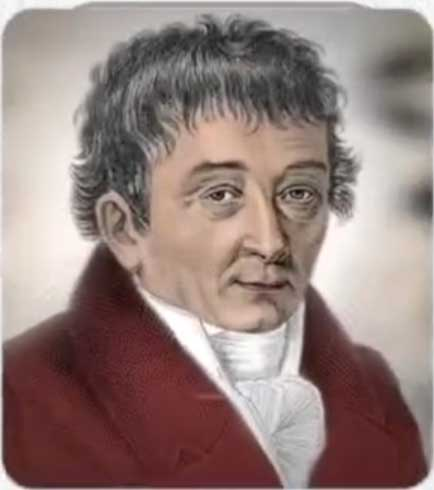
در سال 1794 میلادی برای نخستین بار کشف کرد مه آهن منشا زمینی نداره و خارج از زمین به سیاره ما اومده
و در سال 1957 میلادی ویلیام فاولر اختر فیریکدان آمریکایی
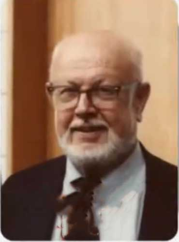
به همراه گروهی از دانشمندان کشف میکنه که آهن در خارج از منظومه شمسی که در اثر ستاره های غول پیکر که ده ها برابر خورشید جرم دارن ساخته شده و سپس به زمین رسیده این کشف بزرگ باعث شد او در سال 1983 جایزه نوبل فیزیک رو دریافت کنه
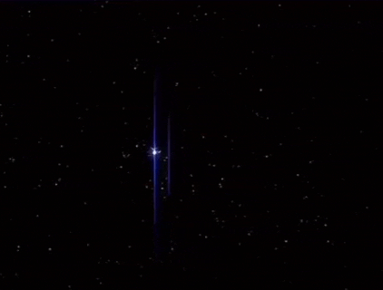
از طرفی در سال 1735 میلادی یوهان گملین شیمیدان آلمانی
برای اولین بار وجود آهن در خون انسان رو کشف کرد
سال ها بعد در سال 1862 میلادی فلیکس زایلر پزشک و شیمیدان آلمانی

دریافت که آهن نقش اساسی در انتقال اکسیژن از ریه ها به سراسر بدن ایفا میکنه
به زبان ساده : آهن مثل یک ماشین حمل اکسیژن در خون انسان عمل میکنه و در نتیجه تحقیقات مدرن نیز اهمیت آهن روز به روز آشکارتر شده

اما 1400 سال پیش در عصری که هیچ انسانی از منشا فرا زمینی آهن اطلاعی نداشت قرآن به این حقیقت علمی اشاره میکنه و در آیه 25 سوره حدید خدا میگه :
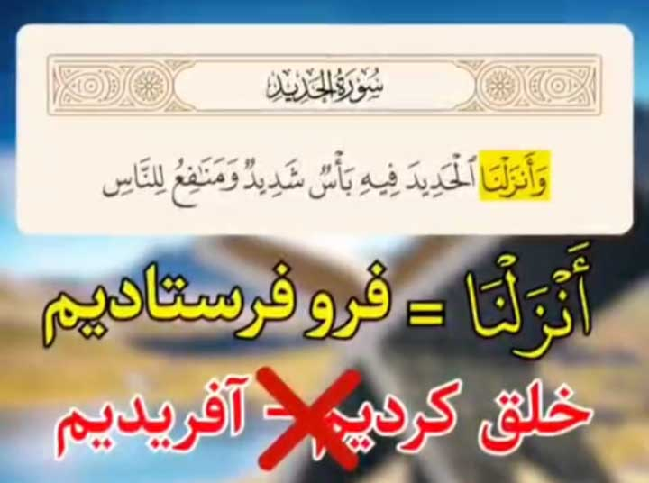
و آهن را فرو فرستادیم که در آن نیروی شدید و منافعی برای مردم است در این آیه اَنزَلنَا به معنای فرو فرستادیم است نه به معنای خلق کردیم یا آفریدیم و این نکته دقیقا با یافته های علمی مدرن که آهن از آسمان و فضای کیهانی به زمین اومده هماهنگه
حقیقتی که دانش بشری تنها در قرن 18 تا 20 میلادی تونست اون رو کشف کنه
و جالب اینکه اسم این سوره هم یعنی حدید به معنای آهنه
و شگفت انگیز تر از همه اینکه اگر ارزش ابجدی کلمه حدید رو حساب کنیم عدد 26 به دست میاد
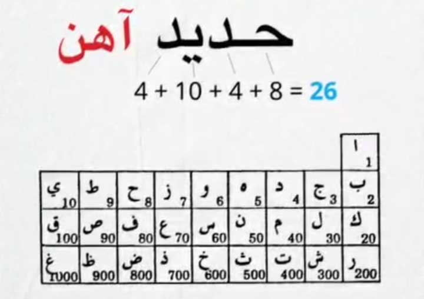
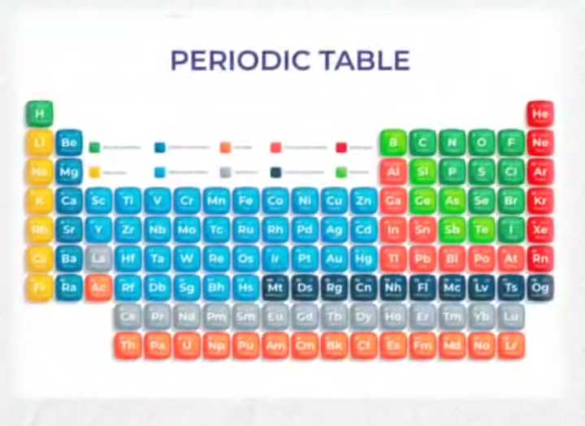
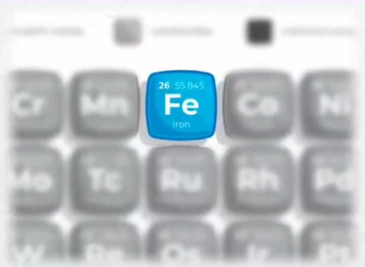
که این عدد دقیقا همون عدد اتمی عنصر آهن در جدول تناوبی عناصره
اگر ارزش ابجدی تمام حروف الحدید رو حساب کنیم به عدد 57 می رسیم
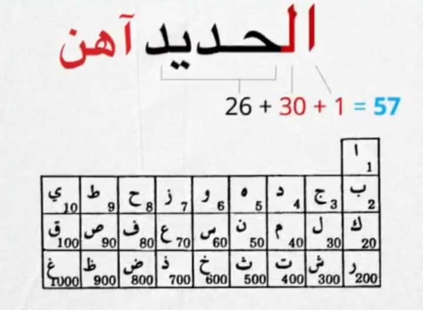
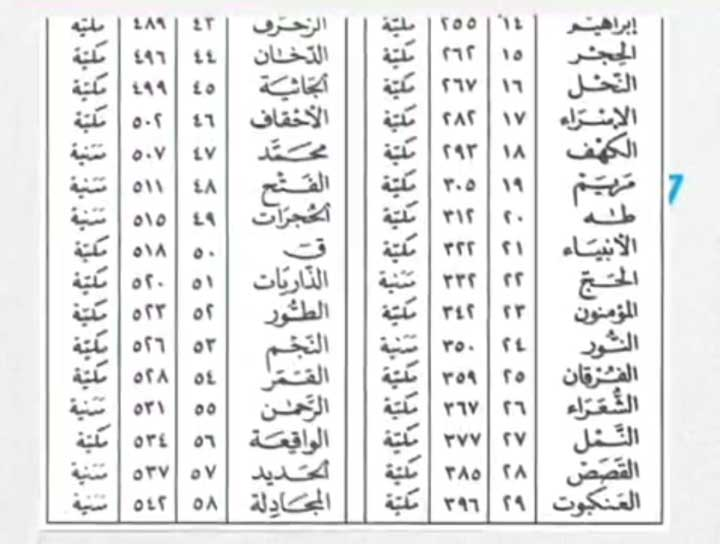
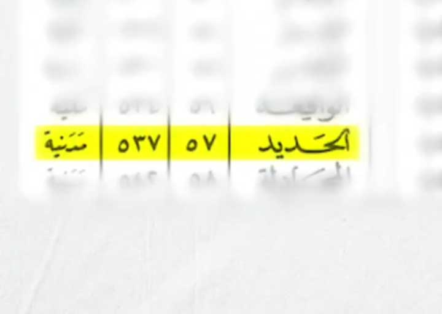
و از طرفی این سوره 57 مین سوره قرآنه که عدد 57 یکی از ایزوتوپ های پایدار آهنه
و اگر 29 که تعداد آیات این سوره است و عدد 57 که شماره این سوره است رو پشت سرهم بنویسیم عدد 2957 بدست میاد که این عدد سومین
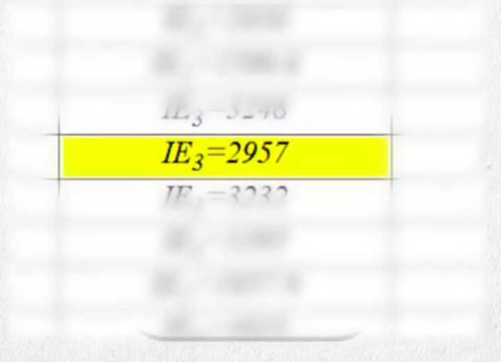
انرژی یونیزاسیون آهن بر حسب کیلو ژول بر مول است
و همه این ها یعنی 1400 سال پیش در کتابی بدون هیچ دانش انسانی یا فناوری علمی نام و عدد عنصر حیاتی که ستون فقرات اکوسیستم هاست با دقت علمی و ریاضی ذکر شده
ایا این میتونه تصادفی باشه ؟
هماهنگی اعجاز گونه نام سوره ، عدد ابجد ، عدد اتمی و منشا آسمانی آهن اون هم قرن ها پیش از علم مدرن چه پیامی میتونه داشته باشه ؟
نکات تکمیلی
- اشاره قرآن به «فروفرستادن آهن» در زمانی که بشر از منشاء کیهانی آن بیخبر بود، هماهنگی شگفتی میان وحی و علم را نشان میدهد. این تعبیر نه شعر است نه استعاره، بلکه بیان واقعیتی علمی است که قرنها بعد آشکار شد.
- دقت عددی میان نام سوره، عدد آیات و اعداد اتمی، نشان از نظم حسابشدهای دارد که بهسختی میتواند تصادفی باشد؛ این نظم بخشی از پیام اعجاز عددی قرآن است.
- دانشمندان اخترفیزیک تأیید کردهاند که آهن در هستهی ستارههای عظیمجرم ساخته و سپس با انفجار ابرنواخترها به زمین پاشیده میشود؛ هیچ تمدن انسانی در قرن هفتم میلادی چنین دانشی نداشت.
- برخی منتقدان، انزال را به «آفریدن» تعبیر کردهاند، اما مفسران بزرگ مانند طبری و فخر رازی تصریح کردهاند که در این آیه معنای «فرستادن از بالا» مدنظر است، نه «خلق کردن».
- اگرچه عدد ابجد و عدد اتمی بهخودیخود حجت شرعی نیستند، اما همزمانی دقیق آنها با نام و شماره سوره، دلیلی عقلپسند بر نظم هدفمند قرآن است، نه تصادف ساده.